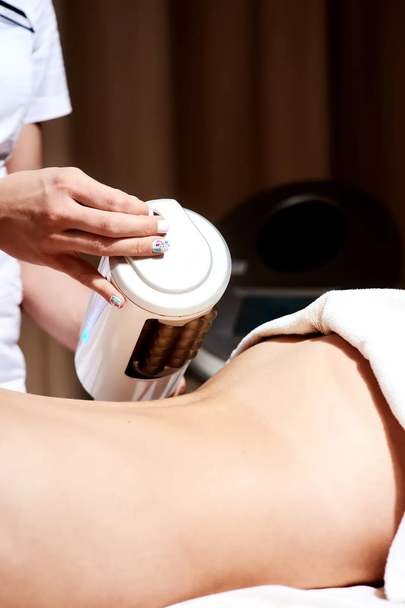

Лазерная эпиляция — это всегда курс. Даже самый современный аппарат за один раз удаляет только часть волос. Дело не в мощности, а в том, как растут волосы: лазер действует только на те, что находятся в активной фазе роста.
Почему нельзя обойтись одной процедурой
Каждый волос проходит три фазы: активный рост, переходную фазу и покой. Лазер нагревает пигмент меланин в волосе и через него разрушает фолликул. Но эффективно это работает только в фазе активного роста, когда волос связан с корнем.
В любой момент в активной фазе находится лишь часть волос. Остальные «проснутся» позже. Поэтому процедуры повторяют через интервалы — каждый раз захватывая новую волну.
Сколько процедур нужно
Обычно курс включает от 6 до 10 процедур. На количество влияют:
- зона: на лице волосы растут быстрее и чувствительнее к гормональному фону, чем на голенях;
- цвет и толщина волос: тёмные жёсткие волосы реагируют лучше, светлые и пушковые — хуже;
- тип кожи: на смуглой коже врач выбирает особые параметры;
- гормональный фон.
После курса может понадобиться поддерживающая процедура раз в несколько месяцев.

Какой интервал между процедурами
На лице волосы растут быстрее, поэтому интервалы короче — несколько недель. На теле — от одного до двух месяцев. По мере курса волосы становятся тоньше и реже, и промежутки увеличиваются. Конкретный график составит врач.
Чем отличаются лазеры
Лазеры различаются длиной волны: от неё зависит, насколько глубоко проникает свет и как он взаимодействует с пигментом.
- Диодный лазер (LightSheer Duet, Soprano) — универсальный, подходит для большинства типов кожи и волос.
- Александритовый — эффективен на светлой коже с тёмными волосами.
- Неодимовый — проникает глубже, его используют на смуглой коже.
У DEKA есть модели с разными источниками. Какой аппарат и режим подойдут, врач скажет на консультации.
Почему лучше начинать осенью и зимой
Лазер работает по пигменту. Загар повышает риск ожога и пигментации, поэтому перед процедурой и между ними загорать нельзя. Осенью и зимой контролировать это проще, а к лету курс как раз подходит к концу. Даже зимой не забывайте про солнцезащитный крем на открытых зонах — подробнее в материале о SPF зимой.
Как подготовиться
- За 2 недели до процедуры не загорайте и не пользуйтесь автозагаром.
- Не удаляйте волосы воском, шугарингом и пинцетом: для лазера нужен волос с корнем. Брить можно — обычно за день до процедуры.
- Расскажите врачу о лекарствах, которые принимаете: некоторые повышают чувствительность к свету.
Вопросы и ответы
Больно ли делать лазерную эпиляцию?
Ощущения зависят от зоны и аппарата: чаще всего это тепло и лёгкое покалывание. У современных диодных лазеров есть охлаждение.
Можно ли делать лазерную эпиляцию летом?
Можно, но нельзя загорать до и после процедуры. Поэтому курс удобнее начинать осенью или зимой.
Убирает ли лазер светлые волосы?
Светлые, рыжие и седые волосы содержат мало пигмента, и лазер работает на них слабо. Врач скажет, будет ли эффект именно у вас.
Сколько стоит лазерная эпиляция в Aldo Coppola?
От 4 600 ₽, цена зависит от зоны и салона.
Источники
- Прайсы центров красоты Aldo Coppola, ноябрь 2026. Цены указаны «от».
- Американская академия дерматологии (AAD): Laser hair removal — FAQs
- Mayo Clinic: Laser hair removal
Имеются противопоказания. Необходима консультация специалиста.